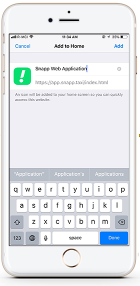
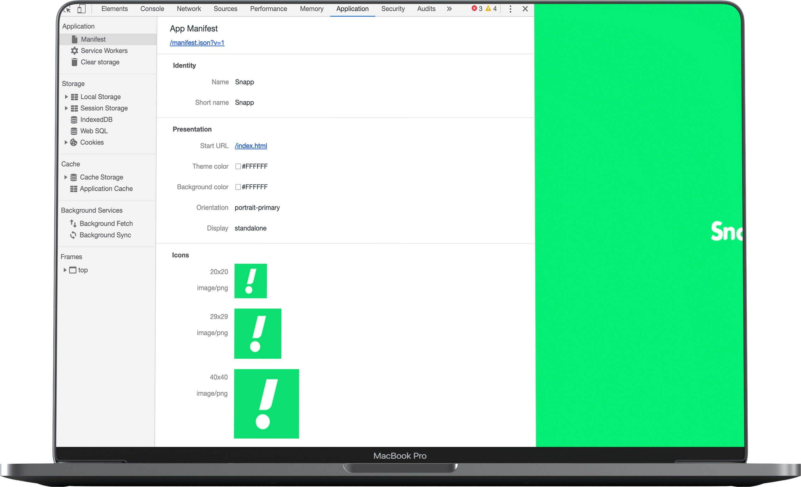

یا
همون چیزی که مرز اپلیکیشنهای موبایل و وب رو از بین میبره!
PWA != SPA
Manifest
مراحل اضافه کردن به HomeScreen
نمونه فایل Manifest
{
"short_name": "Snapp",
"name": "Snapp lite",
"start_url": "/index.html",
"icons": [{
"src": "images/icon-128x128.png",
"sizes": "128x128",
"type": "image/png"
},
...
],
"display": "standalone",
"orientation": "portrait",
"background_color": "#06df70",
"theme_color": "#06df70"
}
Manifest در DevTools
Service Worker
Index.html
window.addEventListener('load', () => {
if (!('serviceWorker' in navigator)) {
/* service workers not supported 😣 */
return
}
navigator.serviceWorker.register('/service-worker.js').then(
() => {
/* registered! 👍🏼*/
},
err => {
console.error('SW registration failed! 😱', err)
})
})
service-worker.js
self.addEventListener('install', event => {
event.waitUntil(
//some code for precache files
})
);
self.addEventListener('activate', event => {
event.waitUntil(
// remove old version cache
})
);
self.addEventListener('fetch', event => {
//handle fetch Event
});
Offline page backup
self.addEventListener("fetch", function(event) {
event.respondWith(
caches
.match(event.request)
.then(function(cached) {
var networked = fetch(event.request)
.then(fetchedFromNetwork, unableToResolve)
.catch(unableToResolve);
return cached || networked;
function fetchedFromNetwork(response) {
var cacheCopy = response.clone();
caches
.open(version + 'pages')
.then(function add(cache) {
cache.put(event.request, cacheCopy);
})
.then(function() {
});
return response;
}
function unableToResolve () {
return new Response('Service Unavailable', {
status: 503,
statusText: 'Service Unavailable',
headers: new Headers({
'Content-Type': 'text/html'
})
});
}
})
);
});

Google Workbox
ساخت سرویس ورکر با GenerateSW
const path = require('path');
const htmlPlugin = require('html-webpack-plugin');
...
const workboxPlugin = require('workbox-webpack-plugin');
plugins: [
new workboxPlugin.GenerateSW({
swDest: 'sw.js',
clientsClaim: true,
skipWaiting: true,
})
]
ساخت سرویس ورکر اختصاصی با InjectManifest
const path = require('path');
const htmlPlugin = require('html-webpack-plugin');
...
const workboxPlugin = require('workbox-webpack-plugin');
plugins: [
new workboxPlugin.InjectManifest({
swSrc: './src/sw.js',
swDest: 'sw.js'
})
]
sw.js
workbox.core.skipWaiting();
workbox.core.clientsClaim();
workbox.routing.registerRoute(
new RegExp('https://app.snapp.taxi'),
new workbox.strategies.StaleWhileRevalidate()
);
self.addEventListener('push', (event) => {
const title = 'Get Started With Workbox';
const options = {
body: event.data.text()
};
event.waitUntil(self.registration.showNotification(title, options));
});
workbox.precaching.precacheAndRoute(self.__precacheManifest);
Cache Strategies
چه موقع از این استراتژیها استفاده کنیم؟
| نوع اطلاعات | تغییرات | استراتژی |
|---|---|---|
| دادههایی که حیاتی نیستند ولی نیاز به به روزرسانی دارند. | اغلب | StaleWhileRevalidate |
| اطلاعات مورد نیاز برای اجرای برنامه (فایلهای اصلی، اسکریپتها) | بسیار کم | cacheOnly |
| فایلهای کش شده | گاهی اوقات | cacheFirst |
| دادههای مهم از لحاظ زمانی (مثل اخبار و ...) | اغلب | NetworkFirst |
| دادههای مهم از لحاظ میزان اهمیت (مثل دادههای کاربران و ...) | اغلب | NetworkOnly |
- - Read More About PWA
- Google Developers
- Service Worker Examples
- Service Worker CookBook
- Workbox documentation
- - Icons and design Licences
- SmashIcons from flaticon
- Srip from flaticon
ارتباط با من:
- Mhos.Malek@gmail.com
-
 Linkedin.com/in/mhmalek
Linkedin.com/in/mhmalek
-
 Github.com/MHMALEK
Github.com/MHMALEK
-
 Twitter.com/Mh_Malek
Twitter.com/Mh_Malek
ممنون که همراه ما بودید!